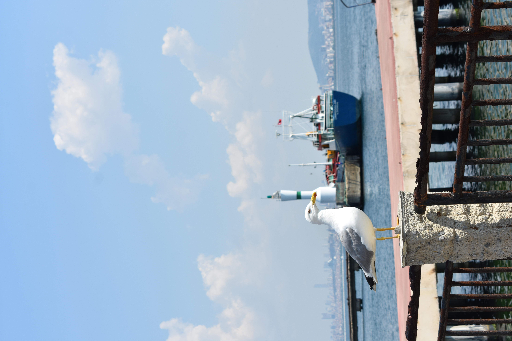
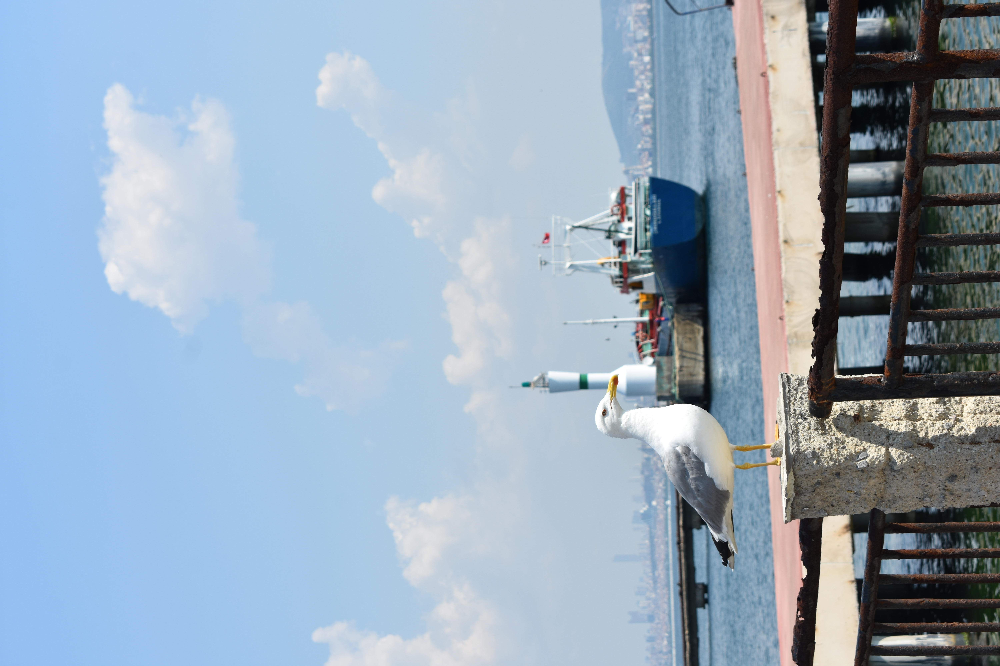

Over the years, I have had the opportunity to travel and explore different countries, meet people of different backgrounds and learn about new cultures. Whether it's visting tourists spots, interacting with locals or finding the hole-it-the-wall restaurant with expetional food, each experiences and interaction is a memorable one. When people ask me what my favorite part of any trip is, I almost always recall a memorable instance with a kind stranger. The world is full of beautiful places and kind souls, one only has to have an open mind in order appreciate the wonderful world we live in.
11+ counties and counting. Once I discovered my hobby for travel and photography, my sister gifted me a Nikon camera. It's been my closest companion since. Fully charged and strapped around my neck, I've managed to snap some memorable photos. Here are a few memories I've captured over the years:


 
